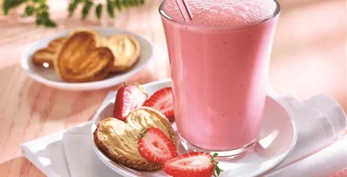

Receta Licuado de fresa con Leche

Prepara un licuado de fresa con leche estas en el lugar correcto
Este licuado de fresa con leche es facil y accesible de preparar para calmar el hambre.
Sigue visualizando esta pagina para saber que utensilios e ingredientes necesitas para prepararlo!.
Utensilios
Ingredientes
- 1 Lata Leche Evaporada
- 2 Tazas Fresa congeladas
- 3 Cucharadas Azúcar
- 1/2 Taza Agua
- 1 Cucharada Esencia de vainilla
¡A cocinar!
Pasos a seguir:
Licúa
- Licúa la Leche Evaporada con el agua, las fresas, la vainilla y el azúcar
Vierte
- Vierte en vasos y ofrece frío. Acompaña con galletas dulces.
Consejos
Consejo nutricional
- El agua simple potable es la mejor opción para hidratarse.
Consejo culinario
- Puedes espolvorear con canela
Informacion Nutrimental
| 340.3 kcal = 1,423kj /por porción |
| Carbohidratos |
Energia |
Grasas |
Fibra |
Proteina |
Grasas Saturadas |
Sodio |
Azucares |
| 54g |
340.3 |
9.8g |
3g |
11.1g |
6.3g |
183.1 mg |
48 g |
¿Quieres otra receta?, Contactanos
Regresar al inicio